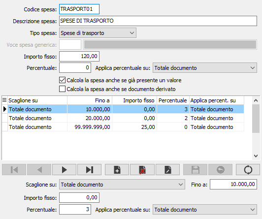

Configurazione spese
Nella tabella è possibile inserire le varie voci di spesa configurate secondo le necessità.

Tramite il campo “Tipo spesa” è possibile definire spese di trasporto, imballo, incasso o generiche. Le spese di trasporto, imballo, incasso vengono gestite sugli appositi campi presenti sulla linguetta dei totali dei documenti, mentre per le spese generiche viene generato un rigo documento con il tipo rigo impostato nella configurazione del modulo Standard. Per le spese generiche è necessario associare una voce di recupero spese che deve essere univoca per ogni configurazione spesa, nel nostro esempio abbiamo inserito la seguente voce che contiene il tipo ricavo o il conto di ricavo, in base a quanto gestito sui documenti del ciclo attivo. Le spese possono avere un valore fisso e/o una percentuale da applicare ai totali del documento a scelta tra totale imponibile, totale documento, totale merce lordo e netto, questo in base a quanto definito sul campo “Applica percentuale su”.
E' possibile anche definire degli scaglioni in base a diversi campi per assegnare valori o percentuali alla spesa, questi vengono sommati a quanto indicato nei valori senza scaglione. Se indicate più spese per scaglioni con valori “Applica percentuale su” queste vengono sommate.
Per le spese di trasporto, imballo, incasso è gestito il campo “Calcola la spesa anche se già presente un valore” che indica se forzare sempre il calcolo della spesa sui documenti emessi senza evasione, in particolar modo:
se attivo la spesa sarà sempre calcolata anche se il relativo campo fosse già valorizzato, ad esempio in variazione di un documento modificando un dato per cui vengono ricalcolati i totali del documento stesso il procedimento ricalcola la spesa anche se il valore era diverso da zero e applica il calcolo sui totali del documento calcolati;
se disattivo la spesa non verrà calcolata se già valorizzata.
Per tutte le tipologie di spese è gestito il campo “Calcola la spesa anche se documento derivato” che indica se forzare il calcolo o meno per i documenti che derivano da altri documenti, in particolar modo:
se attivo la spesa sarà sempre calcolata anche se il documento deriva, del tutto o in parte, da un altro documento; il procedimento azzera la relativa spesa e applica il calcolo sui totali del documento calcolati;
se disattivo la spesa non verrà calcolata se il documento deriva, del tutto o in parte, da un altro documento; nel caso di evasione multipla sul primo documento vengono copiate le spese dal documento di origine, mentre sui documenti successivi non vengono ricalcolate ma lasciate a zero.